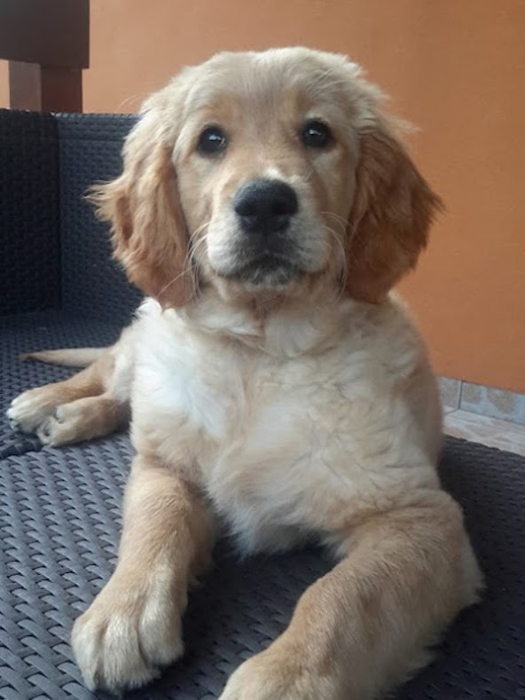
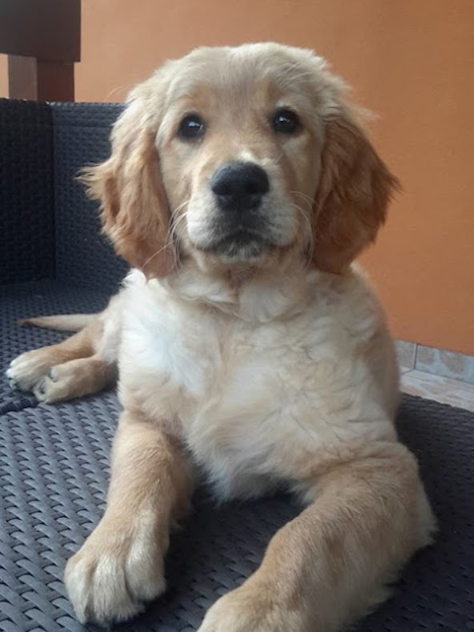
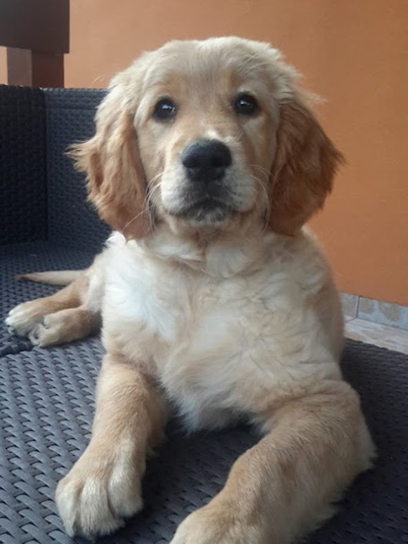

Varga Tamás
A Golden Retriver egy kedves és barátságos kutyafajta, mely Skóciából származik.
A fajta tudományos megnevezése: Golden Retriver - Canis Jupus familiaris.
Fontos! Ha gazdi szeretnél lenni,
nézz utána, hogy felelős
kutyatartással kapcsolatban
milyen ajánlások és
kötelezettségek vannak!

Ha szeretnél még több kutyás fotót nézegetni, látogasd meg a Pixabay portál - Goldenek fotó oldalát!
A videón is látható, hogy a Goldenek szeretnek a földön hemperegni, amely miatt mindig koszosan térünk haza a sétából.